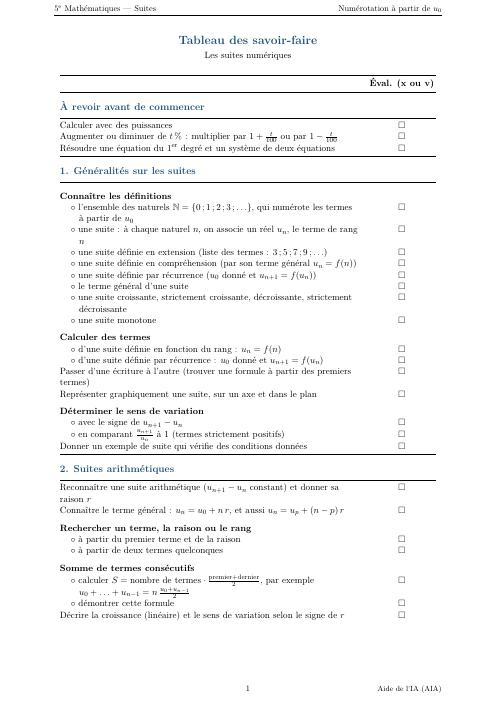

Suites arithmétiques et géométriques, limites, applications financières.
Tout ce qu’il faut savoir faire dans ce chapitre. Le PDF s’ouvre dans un nouvel onglet.

Chaque bloc : une courte explication, puis un quiz de 10 questions. Choisis un seul bloc à la fois ; si tu hésites, commence par le 1. Les termes sont numérotés à partir de u0.
Les naturels, le rang et le terme, les trois façons de définir une suite.
Explication + quizCroissante, décroissante, strictement, monotone : les définitions et les deux méthodes.
Explication + quizOn ajoute toujours la même raison r : terme général, rang, somme de termes.
Explication + quizOn multiplie toujours par la même raison q : terme général, moyenne géométrique, somme.
Explication + quizConverger, diverger ; limites des suites arithmétiques et géométriques ; somme infinie.
Animation + quizIntérêts simples et composés, taux et durée, versements réguliers, tableau d’amortissement.
Explication + quiz